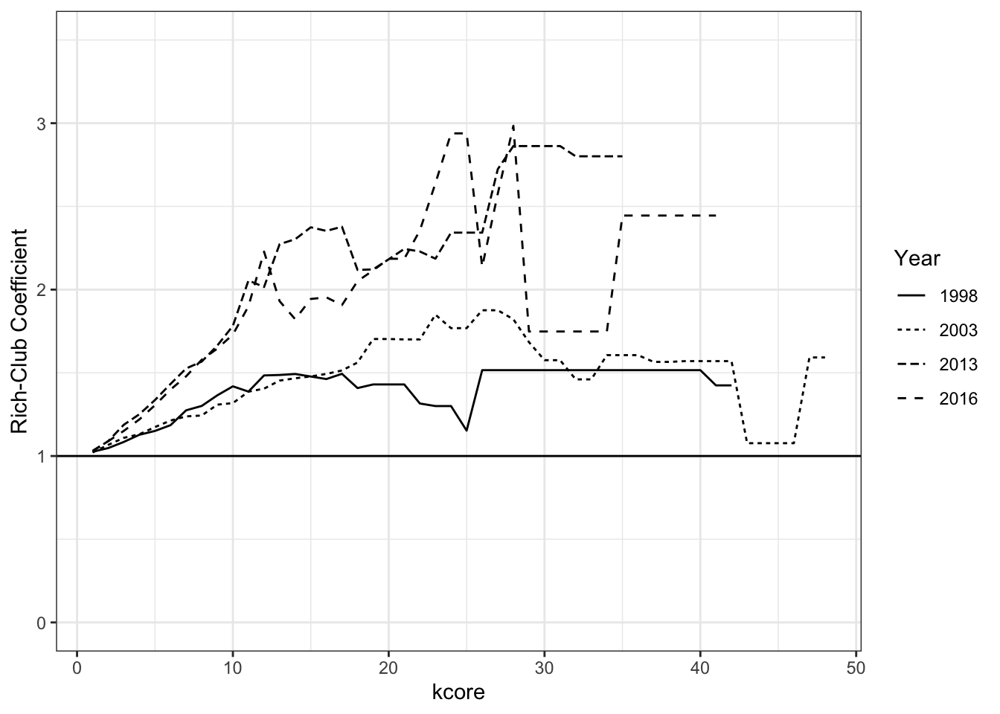

In this R Markdown Notebook, I go through the steps of how to construct the focal network summaries used in The Civic Elite. This replication file covers the analysis of the longitudinal Austin network (1998-2016). The goal of this analysis is to show how to code the analysis and produce similar results in other cities. The same file can be used to produce the results for Cleveland if the Austin data files are exchanged for the Cleveland data files. The construction the networks from the raw data is covered in Data Construction files. This file is not meant to be primer on the network measures used, though, and only briefly describe the tools. For more on the calculation of these statistics and detailed references to the source material, please see the manuscript.
This file relies on brainGraph 2.7.3 for the construction of the Rich-Club Coefficients, so be sure to use this version of brainGraph in order to ensure that functionality remains the same as brainGraph has been updated since the analysis was undertaken. Instructions for installing older versions of R packages can be found here.
In The Civic Elite, I use interlocking directorates among nonprofit organizations to evaluate the following four questions about power in civil society in Cleveland, and Austin:
And–
Based on prior theory, I define elite consolidation as occurring in civil society the following way:
“Elite consolidation in the civic sector occurs when civic leaders—the directors and executive officers of community organizations—tend to increasingly cultivate close relationships with one another, creating an integrated network of partnerships, affiliations, and referrals that constitutes participating civic leaders as an elite (Lee et al., 2015; Levine, 2016; Marwell, 2004; McQuarrie, 2013; Pacewicz, 2015, 2016; Skocpol, 2013; Skocpol and Fiorina, 2004).” (Messamore 2021: 147)
This definition allows me to apply the following network measures of interlocking directorate networks as empirical tests for each question:
This analysis relies heavily on the following packages:
Both statnet and igraph will be used in this tutorial because they offer different advantages. I find that it is easier to work with longitudinal network objects in statnet, for example, but igraph makes it easier to implement community detection and PageRank. It is important to note though that, due to histories of their development, statnet and igraph often conflict with one another. So, I will first use sna to manipulate the temporal network objects and conduct the basic descriptive analyses. Then, I will detach statnet and load igraph to conduct the analyses that are easier ingraph.
Also: it is important to set a seed, as the Rich-Club Coefficient relies on randomization so this starting number needs to be consistent for those results to reproducible.
The following following packages are also necessary and are useful for this file:
rm(list=ls())
library(tidyverse) # Data Management## ── Attaching packages ─────────────────────────────────────── tidyverse 1.3.1 ──## ✓ ggplot2 3.3.5 ✓ purrr 0.3.4
## ✓ tibble 3.1.2 ✓ dplyr 1.0.7
## ✓ tidyr 1.1.3 ✓ stringr 1.4.0
## ✓ readr 2.0.0 ✓ forcats 0.5.1## ── Conflicts ────────────────────────────────────────── tidyverse_conflicts() ──
## x dplyr::filter() masks stats::filter()
## x dplyr::lag() masks stats::lag()library(statnet) # SNA and related suites## Loading required package: tergm## Loading required package: ergm## Loading required package: network##
## 'network' 1.17.1 (2021-06-12), part of the Statnet Project
## * 'news(package="network")' for changes since last version
## * 'citation("network")' for citation information
## * 'https://statnet.org' for help, support, and other information##
## 'ergm' 4.0.1 (2021-06-20), part of the Statnet Project
## * 'news(package="ergm")' for changes since last version
## * 'citation("ergm")' for citation information
## * 'https://statnet.org' for help, support, and other information## 'ergm' 4 is a major update that introduces some backwards-incompatible
## changes. Please type 'news(package="ergm")' for a list of major
## changes.## Loading required package: networkDynamic##
## 'networkDynamic' 0.11.0 (2021-06-12), part of the Statnet Project
## * 'news(package="networkDynamic")' for changes since last version
## * 'citation("networkDynamic")' for citation information
## * 'https://statnet.org' for help, support, and other information## Registered S3 method overwritten by 'tergm':
## method from
## simulate_formula.network ergm##
## 'tergm' 4.0.1 (2021-06-24), part of the Statnet Project
## * 'news(package="tergm")' for changes since last version
## * 'citation("tergm")' for citation information
## * 'https://statnet.org' for help, support, and other information##
## Attaching package: 'tergm'## The following object is masked from 'package:ergm':
##
## snctrl## Loading required package: ergm.count##
## 'ergm.count' 4.0.2 (2021-06-18), part of the Statnet Project
## * 'news(package="ergm.count")' for changes since last version
## * 'citation("ergm.count")' for citation information
## * 'https://statnet.org' for help, support, and other information## Loading required package: sna## Loading required package: statnet.common##
## Attaching package: 'statnet.common'## The following object is masked from 'package:ergm':
##
## snctrl## The following objects are masked from 'package:base':
##
## attr, order## sna: Tools for Social Network Analysis
## Version 2.6 created on 2020-10-5.
## copyright (c) 2005, Carter T. Butts, University of California-Irvine
## For citation information, type citation("sna").
## Type help(package="sna") to get started.## Loading required package: tsna##
## 'statnet' 2019.6 (2019-06-13), part of the Statnet Project
## * 'news(package="statnet")' for changes since last version
## * 'citation("statnet")' for citation information
## * 'https://statnet.org' for help, support, and other information## unable to reach CRANlibrary(tsna) # Tools for Temporal Social Network Analysis
library(reldist) # For the Gini Coefficient## Registered S3 method overwritten by 'Hmisc':
## method from
## summary.formula ergm## reldist: Relative Distribution Methods
## Version 1.6-6 created on 2016-10-07.
## copyright (c) 2003, Mark S. Handcock, University of California-Los Angeles
## For citation information, type citation("reldist").
## Type help(package="reldist") to get started.library(writexl)
library(kableExtra) # for pretty markdowntables in this document##
## Attaching package: 'kableExtra'## The following object is masked from 'package:dplyr':
##
## group_rowslibrary(ggpubr)
set.seed(12345)The data for Austin (constructed in the previous file) is stored as two RData cans that contain the workspaces for Austin from 1998-2003 and Austin from 2013-2016. Within each workspace is a dynamicNetwork object, which are tnsa longitudinal network objects that contain the respective networks for each year in each time period. We first load in these objects and clean everything else out. It is important to note that these are undirected networks.
########
githubURL <- "https://github.com/AFMessamore42/the-civic-elite/raw/main/data/Austin_1990s.RData"
load(url(githubURL)) # Load 1990s
Austin1990s <- dynamicNetwork
rm(list=ls()[-1])
githubURL <- "https://github.com/AFMessamore42/the-civic-elite/raw/main/data/Austin_2010s.RData"
load(url(githubURL)) # Load 2010s
Austin2010s <- dynamicNetwork
rm(list=ls()[-c(1,2)])You can inspect these network objects and their characteristics to learn how to use them.
Austin1990s #1495 orgs## NetworkDynamic properties:
## distinct change times: 7
## maximal time range: 1998 until 2004
##
## Includes optional net.obs.period attribute:
## Network observation period info:
## Number of observation spells: 1
## Maximal time range observed: 1998 until 2004
## Temporal mode: continuous
## Time unit: unknown
## Suggested time increment: NA
##
## Network attributes:
## vertices = 1495
## directed = FALSE
## hyper = FALSE
## loops = FALSE
## multiple = FALSE
## bipartite = FALSE
## net.obs.period: (not shown)
## total edges= 3296
## missing edges= 0
## non-missing edges= 3296
##
## Vertex attribute names:
## active ntee vertex.names
##
## Edge attribute names not shownAustin2010s #2081 orgs## NetworkDynamic properties:
## distinct change times: 5
## maximal time range: 2013 until 2017
##
## Includes optional net.obs.period attribute:
## Network observation period info:
## Number of observation spells: 1
## Maximal time range observed: 2013 until 2017
## Temporal mode: continuous
## Time unit: unknown
## Suggested time increment: NA
##
## Network attributes:
## vertices = 2081
## directed = FALSE
## hyper = FALSE
## loops = FALSE
## multiple = FALSE
## bipartite = FALSE
## net.obs.period: (not shown)
## total edges= 3417
## missing edges= 0
## non-missing edges= 3417
##
## Vertex attribute names:
## active ntee vertex.names
##
## Edge attribute names not shownIn order to obtain statistics that describe the network in each year, we will need to extract the individual network objects from the temporal network object. Then, we are going to write a loop that will calculate the network statistics on each network in each year.
network_1998 <- network.extract(Austin1990s, at=1998) #IDs change in extraction
network_1999 <- network.extract(Austin1990s, at=1999)
network_2000 <- network.extract(Austin1990s, at=2000)
network_2001 <- network.extract(Austin1990s, at=2001)
network_2002 <- network.extract(Austin1990s, at=2002)
network_2003 <- network.extract(Austin1990s, at=2003)
#
network_2013 <- network.extract(Austin2010s, at=2013)
network_2014 <- network.extract(Austin2010s, at=2014)
network_2015 <- network.extract(Austin2010s, at=2015)
network_2016 <- network.extract(Austin2010s, at=2016)
net_list <- list(network_1998,network_1999, network_2000,
network_2001,network_2002,network_2003, network_2013,
network_2014,network_2015, network_2016)I then wrote a loop to extract the network statistics of interest. The most critical piece of information was the number of organizations in the main component. In this case, the main component is the largest group of organizations that can all reach one another through an unbroken chain of edges. I also extract information on the number of isolates, number of components, mean degree, and mean geodesic of the main component. Degree refers the number of interlocks held by an organization. Geodesics, meanwhile, are the shortest path between any two organizations as defined by the number of interlocks it takes an organization to reach another organization through the interlock network.
After constructing these tables, I then exported them, determined the proportion in the main component, and combined them with the data for Cleveland and prepared for the manuscript.
## Construct Vectors to store the information
N = vector()
Mean_Dg = vector()
Pro_Isolates = vector()
Size_main_component = vector()
Mean_Geodesic = vector()
Components= vector()
for (i in net_list){
N = append(N, length(i$val)) #retrieve the number of organizations from the val object
Mean_Dg = append(Mean_Dg, mean(degree(i, gmode="graph"))) #retrieve the mean degree in the undirected graph
Pro_Isolates = append(Pro_Isolates, length(isolates(i))/length(i$val)) #retrieve the proportion of isolates
i_main <- component.largest(i, connected = "weak") #identify the main component
set.vertex.attribute(i, "i_main", i_main) #set main component membership as an organizational attribute
i_main_graph<-get.inducedSubgraph(i,v=which (i %v% 'i_main'==TRUE)) #extract the main component
Size_main_component <- append(Size_main_component, length(i_main_graph$val)) #identify the size of the main component
Mean_Geodesic = append(Mean_Geodesic, mean(geodist(i_main_graph)$gdist)) #obtain the mean geodesic
degree <- degree(i) # get the degree of all organizations
set.vertex.attribute(i, "degree", degree) #set this as an attribute
i_noisolates <- get.inducedSubgraph(i, v= which(i %v% "degree" >0) ) #extract networks that eliminate the isolates
Components = append(Components, components(i_noisolates)) #count the number of non-isolate components
}
one_mode_time <- cbind(N, Mean_Dg, Pro_Isolates, Size_main_component, Mean_Geodesic, Components)
write.csv(one_mode_time, "one_mode_time_austin.csv")
#pull out 2016 ntee for illustrative purposes for when we switch to igraph
names_later <- get.vertex.attribute(network_2016, "vertex.names")
ntee <- get.vertex.attribute(network_2016, "ntee")
ntee_codes <- as.data.frame(cbind(names_later, ntee))From here, we get the basic information we need to address the first research question: it appears that the main component is becoming proportionally larger, which suggests elite consolidation is occurring in the civic sector.
one_mode_time <- as.data.frame(one_mode_time) %>%
mutate(Prop_Main_Component = Size_main_component/N) %>% kbl() %>% kable_minimal()
one_mode_time| N | Mean_Dg | Pro_Isolates | Size_main_component | Mean_Geodesic | Components | Prop_Main_Component |
|---|---|---|---|---|---|---|
| 739 | 2.313938 | 0.5087957 | 298 | 3.874826 | 30 | 0.4032476 |
| 855 | 2.463158 | 0.4701754 | 358 | 3.877095 | 43 | 0.4187135 |
| 885 | 1.789831 | 0.5751412 | 299 | 4.163779 | 37 | 0.3378531 |
| 988 | 2.489879 | 0.4777328 | 428 | 4.133330 | 42 | 0.4331984 |
| 1016 | 2.340551 | 0.4763780 | 434 | 4.107530 | 46 | 0.4271654 |
| 1040 | 2.538461 | 0.4538462 | 461 | 4.099143 | 46 | 0.4432692 |
| 1296 | 2.180556 | 0.4429012 | 524 | 4.861117 | 73 | 0.4043210 |
| 1477 | 1.990521 | 0.4556534 | 583 | 4.999003 | 84 | 0.3947190 |
| 1644 | 2.021898 | 0.4543796 | 673 | 5.126057 | 83 | 0.4093674 |
| 1689 | 2.170515 | 0.4333925 | 746 | 5.155417 | 87 | 0.4416815 |
At this point, we are going to have to move from statnet world to igraph world because its easier to implement the Rich-Club Coefficient and Community Detection in iGraph.
detach("package:statnet") ## very important to sytemmatically detach anything connected to statnet before swtiching to igraph
detach("package:sna")
detach("package:tsna")
detach("package:tergm")
detach("package:ergm.count")
detach("package:ergm")
detach("package:statnet.common")
detach("package:networkDynamic")
detach("package:network")
library(brainGraph) #loads igraph by default## Loading required package: igraph##
## Attaching package: 'igraph'## The following objects are masked from 'package:dplyr':
##
## as_data_frame, groups, union## The following objects are masked from 'package:purrr':
##
## compose, simplify## The following object is masked from 'package:tidyr':
##
## crossing## The following object is masked from 'package:tibble':
##
## as_data_frame## The following objects are masked from 'package:stats':
##
## decompose, spectrum## The following object is masked from 'package:base':
##
## uniongraph_1998 <- graph.adjacency(network_1998[,], mode="undirected") #here we are extracting the adjacency matricies that we are going to study in the following analyses
graph_2003 <- graph.adjacency(network_2003[,], mode="undirected")
graph_2013 <- graph.adjacency(network_2013[,], mode="undirected")
graph_2016 <- graph.adjacency(network_2016[,], mode="undirected")
#storing ntee for descriptives later
graph_2016 <- set_vertex_attr(graph_2016, "ntee", value = ntee_codes$ntee)In this study, I use the rich-club coefficient of the CBO-by-CBO networks as an index of hierarchy (Zhou and Mondragon 2004). The rich-club coefficient of a graph is an index of the propensity of nodes at degree k to connect with other nodes of degree equal to or greater than k normalized over the number of ties that could occur among nodes with degree equal to or greater than k in a complete graph, for all degree k. The advantage of the rich-club coefficient is that it allows a direct assessment of the tendency for well-connected organizations to interlock over time through comparison of the coefficient slopes in each network. If the slopes of the coefficients are stable between 1998 and 2016, it indicates that the inequality in interlocks among CBOs has not changed over time. If the slopes rise over time, meanwhile, it indicates increasing hierarchy and insularity of ties within the network.
At every level of k, I again normalize this index over a the mean of rich-club coefficients generated from 1000 random graphs with the same degree distribution. This is to account for the fact that in certain degree distributions it becomes it becomes impossible to avoid connecting high degree hubs.
The calculation of the rich-club coefficient is computationally intensive due to construction of the randomized networks. Be sure you have the time to perform the next step.
###Rich Club Tendencies
rc1998 <- rich_club_norm(graph_1998, N=1000) ## Warning: executing %dopar% sequentially: no parallel backend registeredrc2003 <- rich_club_norm(graph_2003, N=1000)
rc2013 <- rich_club_norm(graph_2013, N=1000)
rc2016 <- rich_club_norm(graph_2016, N=1000)
#Extracting the RC Coefficients for their Trendlines
trendline1998 <- rc1998 %>% select(k, norm) %>% dplyr::mutate(trend=1998)
trendline2003 <- rc2003 %>% select(k, norm) %>% dplyr::mutate(trend=2003)
trendline2013 <- rc2013 %>% select(k, norm) %>% dplyr::mutate(trend=2013)
trendline2016 <- rc2016 %>% select(k, norm) %>% dplyr::mutate(trend=2016)
#Joining this Information Together in a Single Table
k <- as.data.frame(c(1:50)) %>% rename(k=`c(1:50)`)
richtrends1998 <- left_join(k,trendline1998, by = "k")
richtrends2003 <- left_join(k, trendline2003, by = "k")
richtrends2013 <- left_join(k, trendline2013, by = "k")
richtrends2016 <- left_join(k, trendline2016, by = "k")
# Binding it Together and Deleting Irrelvant Rows Where No Observations
richtrends <- rbind(richtrends1998, richtrends2003, richtrends2013, richtrends2016)
richtrends <- richtrends %>% mutate(norm =na_if(norm, "NaN")) %>% mutate(trend= as.factor(trend)) %>% na.omit()
write_xlsx(richtrends, "austinrichtrends.xlsx")
#Constructing the Plot that Ultimately Goes into the Paper
rcplot <- ggplot(data=richtrends, aes(x=k, y=norm, linetype=trend))+
geom_line()+
scale_y_continuous(limits = c(0, 3.5))+
scale_linetype(name="Year")+
xlab("kcore") + ylab("Rich-Club Coefficient")+
geom_hline(aes(yintercept=1))+
theme_bw()
ggexport(rcplot, filename = "rcplot_austin.pdf", height= 5, width = 7)## file saved to rcplot_austin.pdfrcplot
Here, through the comparison of the coefficient slopes, we find evidence of rising hierarchy in the network over time.
In order to understand the questions of technocracy and hegemony/pluralism, it was necessary to implement a form of community detection on the main component. I opted to use Louvain, following Ma and DeDeo (2018) and Heemskerk and Takes (2016).
Louvain network community detection groups nodes into communities which maximize their modularity, Q, the fraction of edges within a community minus the fraction of edges expected to occur in that community expected at random in a degree preserving model. As modularity approaches one, it indicates that a community is highly inter-connected. #### Implementing Louvain Community Detection
#Restrict to main component
cl1998 <- clusters(graph_1998)
graph_1998 <- induced_subgraph(graph_1998,which(cl1998$membership == which.max(cl1998$csize)))
cl2003 <- clusters(graph_2003)
graph_2003 <- induced_subgraph(graph_2003,which(cl2003$membership == which.max(cl2003$csize)))
cl2013 <- clusters(graph_2013)
graph_2013 <- induced_subgraph(graph_2013,which(cl2013$membership == which.max(cl2013$csize)))
cl2016 <- clusters(graph_2016)
graph_2016 <- induced_subgraph(graph_2016,which(cl2016$membership == which.max(cl2016$csize)))
###Clustering of Main Compoennt ### These also produce measures of modulairty in the networks, as well as the number of community
clusters1998 <- cluster_louvain(graph_1998, weights = NULL) #0.54 # 12
clusters2003 <- cluster_louvain(graph_2003, weights = NULL) #0.52 # 15
clusters2013 <- cluster_louvain(graph_2013, weights = NULL) #0.66 # 20
clusters2016 <- cluster_louvain(graph_2016, weights = NULL) #0.69 # 22
#Grabbing Degree to Store as an attribute in these networks. We will look at this later.
dg1998 <- degree(graph_1998)
graph_1998 <- graph_1998 %>% set_vertex_attr("degree", value = as.numeric(dg1998))
dg2003 <- degree(graph_2003)
graph_2003 <- graph_2003 %>% set_vertex_attr("degree", value = as.numeric(dg2003))
dg2013 <- degree(graph_2013)
graph_2013 <- graph_2013 %>% set_vertex_attr("degree", value = as.numeric(dg2013))
dg2016 <- degree(graph_2016)
graph_2016 <- graph_2016 %>% set_vertex_attr("degree", value = as.numeric(dg2016))Once community detection is implemented, it is then possible to interpolate organizations into single nodes representing their community membership. This is done through the contract() function, relying on the cluster membership attribute. Vertex attributes, for the sake of combined, are combined at their mean. However, this throws some errors since the 2016 network has categorical data on NTEE code. In this exercise we are just careful to ignore this byproduct of the contraction and ignore this value. Edge attributes, the focus of this analysis, are unchanged, which permits the PageRank analysis. In other words, all ties between organizations in different clusters are interpolated into multiple ties between single nodes representing each cluster.
# Getting the Size of Each Community. This is how we determine which community number refers to the largest community and we use this later in the analysis of the network "core".
size_2016 <- vector()
for (i in igraph::groups(clusters2016)){
size_2016 <- append(size_2016,(length(i)))
}
nclus2016 <- as.numeric(length(size_2016))
# Interpolating Organizations Into their Communities
collapse_2016 <- contract(graph_2016, membership(clusters2016), vertex.attr.comb="mean")## Warning in mean.default(c("AUSTIN NEIGHBORHOOD ALLIANCE FOR HABITAT", "HOMEBASE
## TEXAS", : argument is not numeric or logical: returning NA## Warning in mean.default(c("AUSTIN TENANTS COUNCIL", "AUSTIN TEXAS ROLLERGIRLS
## INC", : argument is not numeric or logical: returning NA## Warning in mean.default(c("TEAMROGUE", "OUTSIDER FILM AND ARTS FESTIVAL", :
## argument is not numeric or logical: returning NA## Warning in mean.default(c("WOMENS HEALTH AND FAMILY PLANNING ASSOCIATION OF
## TEXAS", : argument is not numeric or logical: returning NA## Warning in mean.default(c("ST DAVIDS COMMUNITY HEALTH FOUNDATION INITIATIVES", :
## argument is not numeric or logical: returning NA## Warning in mean.default(c("ONESTAR FOUNDATION INC", "ONESTAR NATIONAL SERVICE
## COMMISSION INC", : argument is not numeric or logical: returning NA## Warning in mean.default(c("AUSTIN BAR FOUNDATION", "TTLA HOLDINGS INC", :
## argument is not numeric or logical: returning NA## Warning in mean.default(c("TRAVIS COUNTY YOUTH SHOW INC", "REGINA MATER INC", :
## argument is not numeric or logical: returning NA## Warning in mean.default(c("TEXAS ASSOCIATION OF REALTORS DISASTER RELIEF
## FUND", : argument is not numeric or logical: returning NA## Warning in mean.default(c("GRAND CENTRAL TEXAS", "TEXAS COMPUTER EDUCATION
## ASSOCIATION", : argument is not numeric or logical: returning NA## Warning in mean.default(c("DRESS FOR SUCCESS AUSTIN", "TEXAS BEVERAGE
## ASSOCIATION", : argument is not numeric or logical: returning NA## Warning in mean.default(c("AUSTIN SCOTTISH RITE COMMUNITY AND CHILDRENS THEATRE
## INC", : argument is not numeric or logical: returning NA## Warning in mean.default(c("GREATER AUSTIN ECONOMIC DEVELOPMENT CORP DBA
## OPPORTUNITY AUSTIN", : argument is not numeric or logical: returning NA## Warning in mean.default(c("APPAMADA", "HANGER CHARITABLE FOUNDATION", "TEXAS
## WOMEN IN BUSINESS", : argument is not numeric or logical: returning NA## Warning in mean.default(c("WELLS BRANCH SOCCER ASSOCIATION", "ELEVEN EAST
## CORP", : argument is not numeric or logical: returning NA## Warning in mean.default(c("ESCT AUSTIN HOUSING II INC", "EASTER SEALS CENTRAL
## TEXAS-VAUGHN HOUSE", : argument is not numeric or logical: returning NA## Warning in mean.default(c("NOBELITY PROJECT", "NATIONAL CAMPUS AND COMMUNITY
## DEVELOPMENT CORPORATION INC", : argument is not numeric or logical: returning NA## Warning in mean.default(c("TEXAS HOSPITAL ASSOCIATION FOUNDATION", "TAKING CARE
## OF TEXAS", : argument is not numeric or logical: returning NA## Warning in mean.default(c("TEXAS RELIABILITY ENTITY INC", "FRIENDS OF THE DAILY
## TEXAN INC", : argument is not numeric or logical: returning NA## Warning in mean.default(c("CASNER CHRISTIAN ACADEMY INC", "TEXAS CHARTER SCHOOLS
## ASSOCIATION", : argument is not numeric or logical: returning NA## Warning in mean.default(c("LUTHERAN AFFORDABLE HOUSING CORPORATION", "LUTHERAN
## SOCIAL SERVICES DISASTER RESPONSE INC", : argument is not numeric or logical:
## returning NA## Warning in mean.default(c("AUSTIN COMMUNITY DESIGN AND DEVELOPMENT CENTER", :
## argument is not numeric or logical: returning NA## Warning in mean.default(c("L", "C", "I", "B", "P", "B", "B", "P", "I", "I", :
## argument is not numeric or logical: returning NA## Warning in mean.default(c("L", "N", "C", "S", "N", "Q", "B", "C", "T", "B", :
## argument is not numeric or logical: returning NA## Warning in mean.default(c("N", "A", "X", "T", "S", "B", "P", "S", "T")):
## argument is not numeric or logical: returning NA## Warning in mean.default(c("E", "P", "C", "A", "N", "S", "F")): argument is not
## numeric or logical: returning NA## Warning in mean.default(c("E", "E", "C", "F", "Y", "F", "F", "E", "P", "B", :
## argument is not numeric or logical: returning NA## Warning in mean.default(c("S", "S", "B", "T", "X", "P", "S", "B", "K", "B", :
## argument is not numeric or logical: returning NA## Warning in mean.default(c("I", "S", "S", "B", "S", "A", "G", "K", "E", "I", :
## argument is not numeric or logical: returning NA## Warning in mean.default(c("O", "Z", "B", "B", "L", "S", "I", "W", "B", "J", :
## argument is not numeric or logical: returning NA## Warning in mean.default(c("L", "S", "D", "P", "N", "T", "B", "J", "S", "W", :
## argument is not numeric or logical: returning NA## Warning in mean.default(c("L", "B", "S", "S", "L", "S", "Y")): argument is not
## numeric or logical: returning NA## Warning in mean.default(c("J", "S", "S", "B", "A", "P", "B", "H", "D", "S", :
## argument is not numeric or logical: returning NA## Warning in mean.default(c("A", "J", "S", "N", "E", "B", "N", "L", "T", "W", :
## argument is not numeric or logical: returning NA## Warning in mean.default(c("S", "G", "E", "K", "E", "S", "I", "B", "S", "N", :
## argument is not numeric or logical: returning NA## Warning in mean.default(c("X", "P", "B", "W", "T", "B", "B", "A", "F", "G", :
## argument is not numeric or logical: returning NA## Warning in mean.default(c("N", "S", "G", "O", "X", "O", "L", "E", "X", "N", :
## argument is not numeric or logical: returning NA## Warning in mean.default(c("L", "G", "A", "L", "C", "E", "E", "L", "E", "L", :
## argument is not numeric or logical: returning NA## Warning in mean.default(c("B", "S", "C", "L", "A", "O", "L", "N", "G", "T", :
## argument is not numeric or logical: returning NA## Warning in mean.default(c("E", "C", "E", "G", "S", "G", "B", "S", "E", "E", :
## argument is not numeric or logical: returning NA## Warning in mean.default(c("W", "B", "B", "B", "W", "B", "B")): argument is not
## numeric or logical: returning NA## Warning in mean.default(c("B", "B", "A", "B", "S", "B", "B", "T", "B", "C", :
## argument is not numeric or logical: returning NA## Warning in mean.default(c("L", "P", "B", "W", "P", "S", "X", "G", "C", "L", :
## argument is not numeric or logical: returning NA## Warning in mean.default(c("S", "B", "B", "X", "S", "G", "B", "Y", "N", "B", :
## argument is not numeric or logical: returning NA## Page Rank Among Elite Communities
pr2016 <- as.data.frame(page.rank(collapse_2016)$vector) *100
pr2016_top <- pr2016 %>% arrange(desc(`page.rank(collapse_2016)$vector`)) %>% dplyr::slice(1:10)
## Gini Coefficient of Page Rank Among Elite Communities
gini(pr2016_top$`page.rank(collapse_2016)$vector`) # --- >> gini coefficient of 20 percent## [1] 0.2002956#Getting Mean Degree
meandg2016 <- as.data.frame(get.vertex.attribute(collapse_2016, "degree"))
# Saving Results for Export
core_2016 <- cbind(size_2016, meandg2016,pr2016 ) %>%
rename(`Size (Nodes)` =size_2016, `Average Degree` = `get.vertex.attribute(collapse_2016, "degree")`,
`Page Rank` = `page.rank(collapse_2016)$vector`) %>% arrange(desc(`Size (Nodes)`)) %>% slice(1:10)
write_xlsx(core_2016, "austinranks.xlsx")
core_2016 <- core_2016 %>% kbl() %>% kable_minimal()
core_2016| Size (Nodes) | Average Degree | Page Rank |
|---|---|---|
| 94 | 6.606383 | 13.200381 |
| 75 | 4.626667 | 7.278967 |
| 49 | 4.612245 | 5.298876 |
| 49 | 4.591837 | 5.114184 |
| 45 | 3.511111 | 4.088768 |
| 43 | 3.906977 | 4.233437 |
| 42 | 5.166667 | 5.123186 |
| 40 | 3.225000 | 3.794248 |
| 39 | 2.974359 | 3.872824 |
| 39 | 3.410256 | 3.984133 |
This figure provides us with the information necessary for evaluating hegemony/pluralism: the disttribution of PageRank among the top ten communities of the civic elite is fairly egalitarian. (20 percent here)
####: Technocracy: Looking at the “Core” of the Civic Elite
For this final hypothesis, we need to take a look at the most central actors in the most central community. Given the communities constructed from the previous step, we can induce a subgraph from the largest community and then investigate who the most central actors based on degree.
## Create a SubGraph Of Only the Largest Community. I found this number in the size_2016 object
elites <- induced_subgraph(graph_2016, membership(clusters2016)==22)
#Get the table of the civic core
elite_n <- get.vertex.attribute(elites, "name")
elite_d <- get.vertex.attribute(elites, "degree")
elite_ntee <- get.vertex.attribute(elites, "ntee")
elite_table <- as.data.frame(cbind(elite_n, elite_d, elite_ntee)) %>% arrange(desc(as.numeric(elite_d))) %>% slice(1:15)
write_xlsx(elite_table, "austincore.xlsx")
elite_table <- elite_table %>% kbl() %>% kable_minimal()
elite_table| elite_n | elite_d | elite_ntee |
|---|---|---|
| GREATER AUSTIN CHAMBER OF COMMERCE | 42 | S |
| BOY SCOUTS OF AMERICA 564 CAPITOL AREA COUNCIL | 29 | O |
| BOY SCOUTS OF AMERICA CAPITOL AREA COUNCIL TOM WOOTEN TRUST | 29 | O |
| GREATER AUSTIN PERFORMING ARTS CENTER INC | 27 | A |
| AUSTIN PARTNERS IN EDUCATION | 26 | B |
| HEADLINERS CLUB IN AUSTIN | 26 | N |
| AUSTIN AREA RESEARCH ORGANIZATION INC | 23 | S |
| AMERICAN YOUTHWORKS | 16 | B |
| REAL ESTATE COUNCIL OF AUSTIN INC | 16 | L |
| CAPITAL AREA FOOD BANK OF TEXAS INC | 15 | K |
| AUSTIN TRINITY SCHOOL | 14 | B |
| AUSTIN COMMUNITY COLLEGE CENTER FOR PUBLIC POLICY AND POLITICAL STUDIES | 13 | B |
| HEADLINERS FOUNDATION OF TEXAS | 13 | A |
| WORKSOURCE - GREATER AUSTIN AREA DBA WORKFORCE SOLUTIONS - CAPITAL | 13 | J |
| FOSTER ANGELS OF CENTRAL TEXAS FOUNDATION | 11 | P |
From here we get a look at the organizations most central in the network. These organizations look pretty close to the organizations found by Galaskiewicz (1979), suggesting persistent traditionalism.
And thats it! Additional minor analyses are also available in the paper beyond the main ones done here. These use, for example, the Gini coefficient to examine the distribution of fields across clusters, as well as inspect particular communities. The tools for doing these analyses are available from the code above, so I’ll leave it to you to construct these tables if you are so interested. If you have any questions about this work or the paper itself, feel free to reach out to me at: andrew.messamore@gmail.com